Bibliothèques
Réseau de bibliothèques de la Communauté de communes Berry Loire Puisaye
Beaulieu-sur-Loire
Mer, sam de 10h00 à 12h00
10 place de l'Église
45630 Beaulieu-sur-Loire
Bonny-sur-Loire
Mar de 16h00 à 18h00, mer et sam de 10h00 à 12h00 hors périodes scolaires
rue de Bicêtre
45420 Bonny-sur-Loire
Briare
Mar de 16h00 à 18h00, mer de 14h30 à 17h00, ven de 9h00 à 11h00 et sam de 14h30 à 16h30
Square Pierre Armand Thiébaut
45250 Briare
Châtillon-sur-Loire
Lun de 16h00 à 18h00, mer de 14h30 à 17h30, jeu de 10h00 à 11h30 et sam de 10h00 à 12h00
Rue du Cormier
45360 Châtillon-sur-Loire
Dammarie-en-Puisaye
Sam de 10h30 à 12h00
3 rue de la Mairie
45420 Dammarie-en-Puisaye
Ousson-sur-Loire
Mar et 1er ven de 15h30 à 17h00
7 rue du 14 juillet
45250 Ousson-sur-Loire
💻 Médiathèque Départementale du Loiret - Loirétek
Ce site vous permet d'accéder 7 jours sur 7, gratuitement et légalement, à une offre de contenus en ligne répartis en huit grands espaces : musique, cinéma, livres, presse, savoirs, événement, ados et un espace sécurisé dédié aux enfants.
Saison Culturelle
Deux fois par an, la Communauté de communes Berry Loire Puisaye édite un programme des animations culturelles et spectacles de notre territoire.
Vous pouvez le lire en cliquant ici
Associations et Clubs sportifs
De nombreuses associations sur le territoire
Pour connaître les associations et clubs sportifs présents dans votre commune, nous vous invitons à contacter directement votre mairie.
Les mairies disposent de la liste complète des associations locales et de leurs coordonnées.
Jeux - Ludothèques
Bibliothèque de Bonny-sur-Loire

Le 3ème vendredi de chaque mois à partir de 20h00 soirée jeux de société à la bibliothèque ou au Mille Clubs
Contact Maison de Pays
Jeux D Boule

Un samedi par mois pour les familles de 14h30 à 18h et le vendredi soir de 20h à minuit avant les vacances pour une soirée entre adultes
7 rue Gelée
45360 Châtillon-sur-Loire
Ludomobile

Ludothèque itinérante sur la Communauté de communes avec jeux de sociétés et jeux géants
Fréquence : 2 fois par mois
Micro-Folie de Briare

Musée numérique et espace culturel
La Micro-Folie est un musée numérique gratuit et accessible à tous. Sur écran géant ou tablette, partez à la découverte de milliers d'œuvres du monde entier.
Pilotée par la Communauté de communes Berry Loire Puisaye et la ville de Briare, la Micro-Folie propose ateliers, conférences, expositions et animations. Accompagné par un médiateur culturel, voyagez depuis Briare vers d'autres horizons, casque de réalité virtuelle sur la tête ou tablette en main.
Horaires d'ouverture :
- Mercredi de 9h45 à 11h45 et de 13h45 à 17h45
- Jeudi de 13h45 à 17h45
- Vendredi de 13h45 à 17h45
- Samedi de 9h45 à 11h45 et de 13h45 à 17h45
- Le premier dimanche de chaque mois de 13h45 à 17h45
📍 Château de Trousse-Barrière - 45250 Briare
Office de Tourisme et Baludik
Office de Tourisme Terre de Loire et Canaux

C'est une mine d'informations pour retrouver l'ensemble des animations par thématique ou par date. Une liste de diffusion existe sur son site et les réseaux sociaux :
📍 1 Place Charles de Gaulle - 45250 Briare
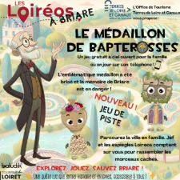
📱 Application Baludik
Baludik est une application mobile — gratuite — de jeux de piste / balades interactives. Elle permet de découvrir le territoire en s'amusant, à travers des énigmes, des indices, des étapes à trouver, des défis à relever.
À Briare, le jeu proposé s'intitule Le Médaillon de Bapterosses!
Infos pratiques pour en profiter :
- Point de départ : Office de Tourisme de Briare, 1 Place Charles de Gaulle.
- Durée estimée : environ 1h30.
- Distance / difficulté : ~ 3 km, adapté pour enfants.
- Coût : Gratuit.
- Langue / accessibilité : version française. Niveau de compréhension adapté selon les âges.
🔍 Disponible gratuitement sur Google Play et App Store
Patrimoine et Terroir

Maison de Pays de Bonny
Ce qu'on aime pour les enfants :
- Escape Game urbain "Marchez, Roulez, Découvrez" : un jeu de piste grandeur nature. Parcours adaptés aux enfants (dès 4-7 ans) et pour les adultes.
- Heure du conte / lectures de contes : pour les petits (3-7 ans), à la Bibliothèque et tous les 3ème vendredis de chaque mois, soirée jeux de société à partir de 20h.
- Bourse aux jouets : un événement festif durant la période de Noël.
- Animations artistiques : ateliers de modelage d'argile, dessins animaliers, ateliers créatifs ponctuels.
Horaires d'ouvertures :
Mardi à vendredi : 09h-12h / 14h-18h
Samedi : 15h-18h
Gratuité de base pour les visites. Accessible PMR.
📍 29 Grande Rue - 45420 Bonny-sur-Loire
📞 02 38 31 57 71
📧 maisondepays@bonnysurloire.fr
🌐 www.bonny-sur-loire.fr
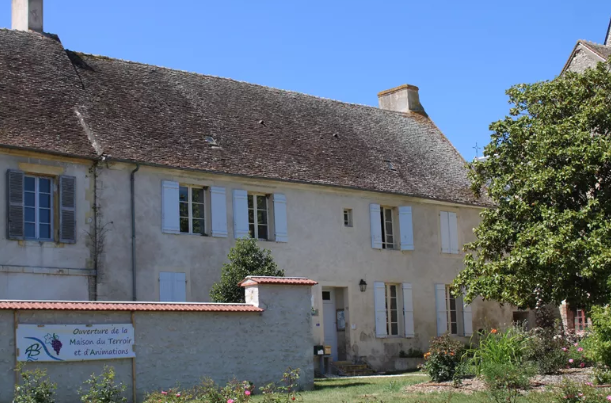
Maison du Terroir et d'Animations de Beaulieu-sur-Loire
Ce qu'on aime pour les enfants :
- Ateliers ludiques et pédagogiques par tranches d'âge : 4-6 ans, 7-9 ans, 10-12 ans, +12 ans.
- Animations saisonnières : "Animation de l'été" en lien avec les produits locaux et savoir-faire des producteurs.
- Découvertes autour de l'alimentation : ateliers pour comprendre d'où viennent les produits transformés.
- Jardin des 5 Sens (parc de la Maison Marret) : gratuit, verger, labyrinthe végétal.
- L'aventure en famille avec l'Office de tourisme "le Secret de Nettir".
Horaires d'ouvertures :
- Haute saison (début mai au 20 sept. et du 18 nov. au 24 déc.) :
Mercredi à samedi : 9h à 12h30 et 14h30 à 17h45 - Hors haute saison (janv. à fin avril et oct. à fin nov.) :
Mercredi et vendredi : 9h à 12h30 et 14h30 à 17h
Accessible PMR. Visites individuelles libres en permanence.
📍 3 place d'Armes - 45630 Beaulieu-sur-Loire
Squares
Espaces de jeux et de détente dans les communes du territoire
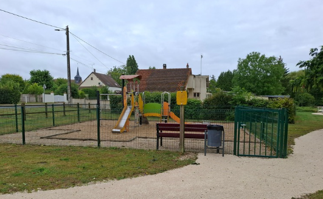
Adon
📍 Aire de jeux, Etang communal d'Adon
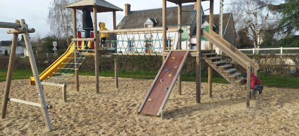
Autry-le-Châtel
📍 Aire de Jeux 9, rue des Vallées
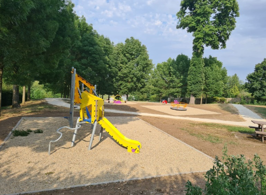
Beaulieu-sur-Loire
📍 Espace jeux Parc Marret, place du 11 novembre
📍 Espace jeux du Canal, D926
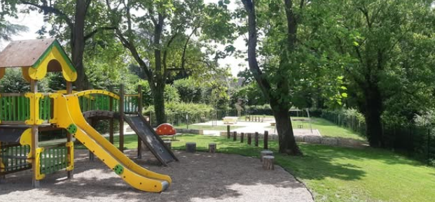
Bonny-sur-Loire
📍 chemin de la Cheuille (3-15 ans)
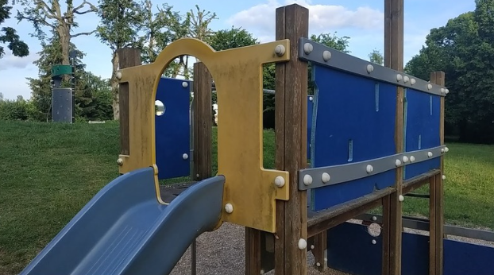
Briare
📍 Square de la Mairie, 3 route d'Ouzouer
📍 Square Frédéric Bapterosse, 6 bd Loreau
📍 Jardin du Baraban, 22 rue des Grandes Allées
📍 Jardin des Vignes, rue du Pont des Vignes
📍 Aire du port aux pierres
📍 Parc de Troussebois, D 952 – rond-point nord
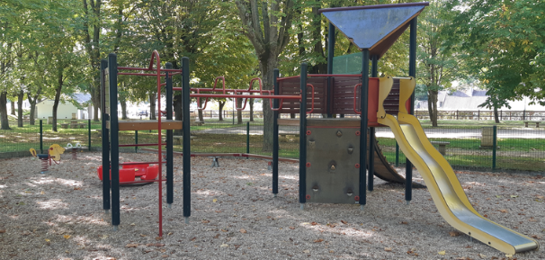
Châtillon-sur-Loire
📍 Square du Port, rue de la Passerelle (3-12 ans)
📍 Square, rue du Stade (3-6 ans)
📍 Square, rue de la Source (3-6 ans)
📍 Square, rue du Glacis (3-8 ans)
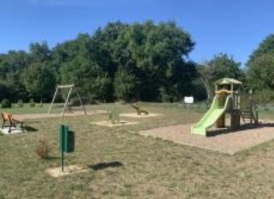
Dammarie-en-Puisaye
📍 Aire de jeux, chemin de la Garenne
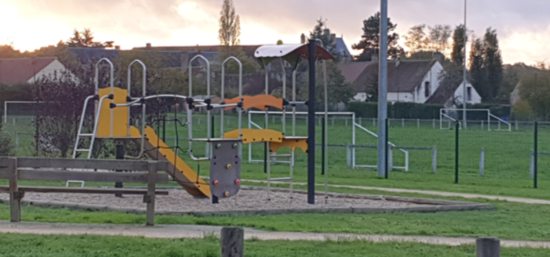
La Bussière
📍 Aire pour enfants des Choux, rue de Dampierre
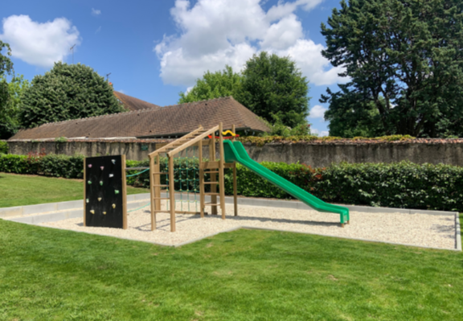
Ousson-sur-Loire
📍 Square Solange Pillard, rue de la Loire
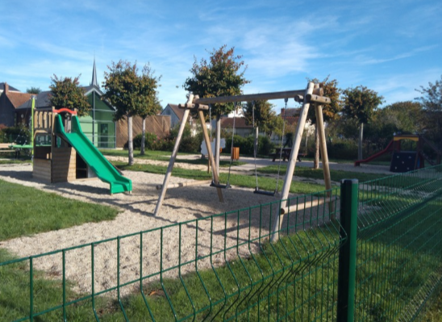
Ouzouër-sur-Trézée
📍 Square du Canal, rue Saint Roch
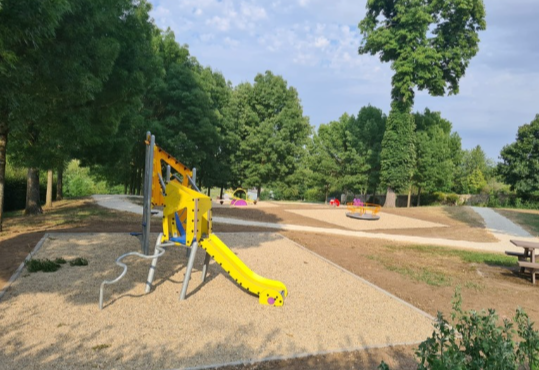
Saint-Firmin-sur-Loire
📍 Aire de pique-nique et de jeu, 32 Grande Rue
City-stades et Skate-parks
Équipements sportifs de plein air
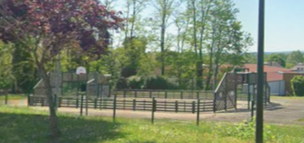
Bonny-sur-Loire
📍 City-stade, 8 rue de la Gare
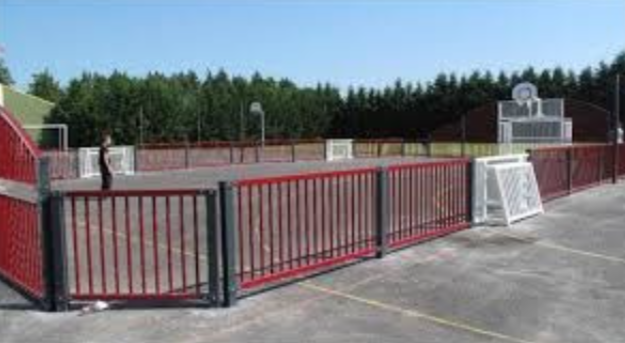
Briare
📍 Complexe sportif, rue des Sports - 45250 Briare
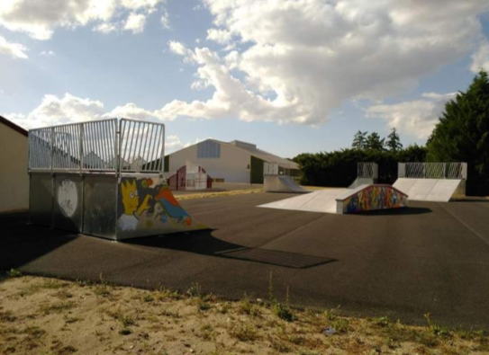
Briare
📍 Skatepark, allée du Paradis
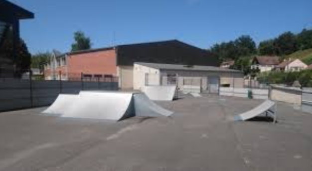
Châtillon-sur-Loire
📍 Complexe sportif, rue des Sports - 45360 Châtillon-sur-Loire
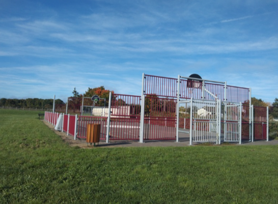
Ouzouër-sur-Trézée
📍 City-stade, rue du Stade